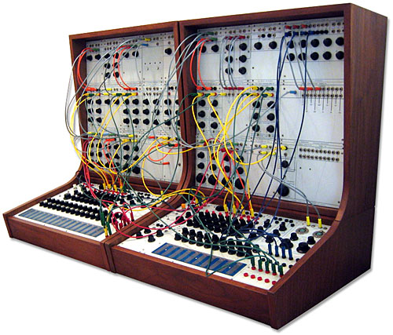

Donald Buchla was a pioneer of audio synthesis operating out of the West Coast from the 1960s to the 2010s. Buchla got his start in synthesis when he was commissioned by Morton Subotnick to create a device that would miniaturize the large, unwieldy electronic studio setups of the time. Buchla's goal was to create an economical, portable, universally compatible, low-maintenance, and easily usable instrument. The Buchla Series 100 had an intuitive and logical front panel that made for easy patching of its modules. Buchla was a pioneer of synth technology as he had developed his design concurrently with and independently of Robert Moog's synthesizer, but Buchla took his in a much more experimental direction. He wanted to create new input methods for his synthesizer so he would be unrestricted by the equal tempered system, so instead of using a keyboard he created resistance and capacitance sensitive touchpads. The Series 100 also contained one of the first analogue sequencers. Overall, it was an extremely important innovation in electronic music and many of its features, such as sequencers, are commonplace in synthesizers today. The Buchla Series 100 has been part of some interesting musical history. The instrument was popular among the avant-garde music scene of the hippies on the West Coast in the 1960s and it was used to provide music for Ken Kesey’s Acid Tests. It was also used by the original commissioner of the synth, Morton Subotnick, on his 1967 debut album Silver Apples of the Moon, notable because it was the first piece of electronic music commissioned by a record company.
